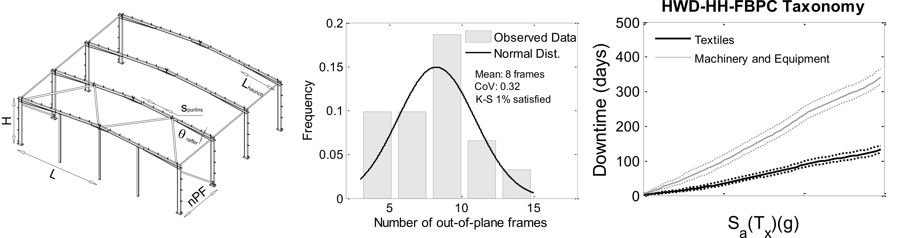

The PRISE Project
PRISE was a highly successful nationally funded research project carried out under the leadership of Dr. Mário Marques. The project involved several academic and industry institutions and provided valuable output both for the CAT modelling community and the Portuguese society in general.
The Project
PRISE was a three-year project founded by the Portuguese Foundation for Science and Technology under the leadership of Dr. Mário Marques. The project aimed at filling the existing lack of an innovative methodology to estimate the financial and human losses correlated to structural damage in buildings, which includes the definition of Portuguese Hazard and built heritage exposure models; the characterization of the physical vulnerability of the buildings; and the establishment of cost of repair/replacement estimates relationships. Given the number of specific tasks to be carried out, the project featured the collaboration with National Laboratory of Civil Engineering (LNEC) , Global Earthquake Model (GEM) and Portuguese Association of Insurers (APS). The PRISE project provided several important outcomes to the scientific community and resulted in various publications. A major outcome of the project was the development of a real-time risk assessment web-based platform in collaboration with the Portuguese Civil Protection, with enormous scope both for the industry and public authorities.

Industrial Model for Mainland Portugal
PRISE, and Miguel's PhD dissertation, constituted the first attempt within academia to develop an industrial seismic risk model for Portugal. The three main components of risk (hazard, exposure, vulnerability) were thoroughly investigated within the project. The models were afterwards implemented in the PRISE web-based risk assessment platform, which relies on the open-source OpenQuake engine developed within the Gobal Earthquake Model initiative and provides user-friendly and interactive cloud-based computing and data visualization.
The model includes information relative to every industrial activity of the 2-digit Portuguese Standard Industrial Classification (CAE) system. A brief description of the model developed is provided below:
- The developed industrial exposure model incorporates extensive statistical economic information collected from the Portuguese Institute of Statistics and a thorough representation of the Portuguese industrial building stock. To characterize the variability in geometric and material properties of the as-buit building stock, more than 200 blueprint drawings of industrial buildings designed in Portugal over the years were inspected. Probability distribution functions were fitted to the collected data and used to randomly generate hundreds of synthetic industrial buildings representative of reality. Each single sytentic building was subjected to earthquake loading by means of robust numerical analysis incorporating all sources of damage typically observed in post-reconnaissance campaigns. Novel categories of industrial buildings associated to similar levels of loss (taxonomies) were proposed.
- The outputs of the numerical analysis of every single synthetic building were assessed and correlated to potential losses. Losses to property incorporating damage to structural and non-structural components and industry-specific contents (e.g., machinery and equipment) were included in the model. Business interruption losses were modelled acounting both for direct and indirect effects, including the impact of input factor, infrastructure and supply chain disruptions in each industry-specific production.
- Georeferenced information on the distribution of the Portuguese industrial building stock was collected from existing databases (e.g., OpenStreet Maps, CORINE Land Cover inventory or AICEP Global Find platform) and incorporated in the exposure model. Every developed model was implemented in the PRISE web-based platform, which provides a distribution of georeferenced property and business interruption losses for Mainland Portugal.


Aggregated Industrial Loss
The overall mean aggregated industrial toll for mainland Portugal was estimated to be around 3.8 billion €, which represents 2.2% of the Portuguese GDP in 2014. The Portuguese industrial sector roughly contributes to 21% of the national GDP. A potential 10% reduction in the country’s industrial annual revenue would be expected for an earthquake event with a return period of 475 years. Over 15000 mean aggregated full time employment jobs were estimated to be lost.
Publications
Araújo M, Castro JM, Marques M (2016) Seismic losses to property and business activity of industrial buildings. Part 1: Modelling assumptions and property losses. Earthquake Spectra (under submission).
Araújo M, Castro JM, Marques M (2016) Seismic losses to property and business activity of industrial buildings. Part 2: Business losses. Earthquake Spectra (under submission).
Araújo M, Castro JM, Marques M (2016) Industrial seismic risk assessment for Mainland Portugal. Natural Hazards (under submission).
Araújo M, Castro JM, Marques M (2016) Industrial seismic loss model for Mainland Portugal and integration in a web-based platform for risk Assessment. Proceedings of the 16th World Conference in Earthquake Engineering, Chile (accepted).
Marques M, Araújo M, Silva V, Castro JM (2016) Advances in catastrophe modelling in Portugal. Proceedings of the 16th World Conference in Earthquake Engineering, Chile (accepted).